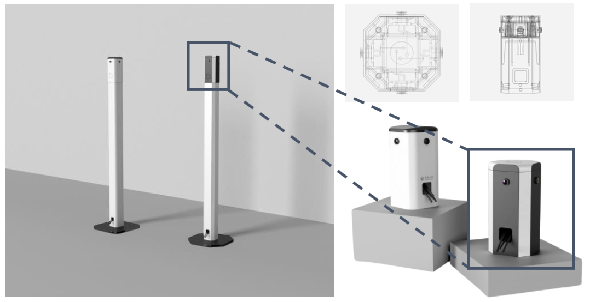
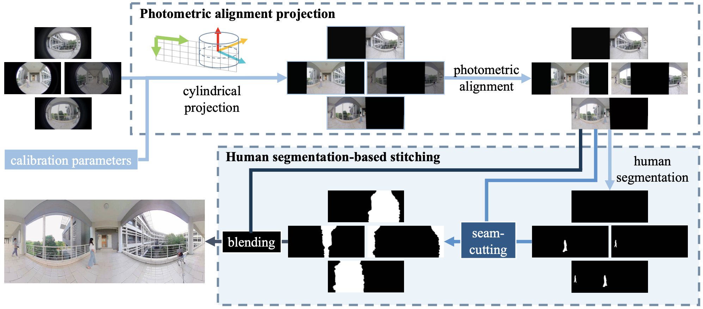
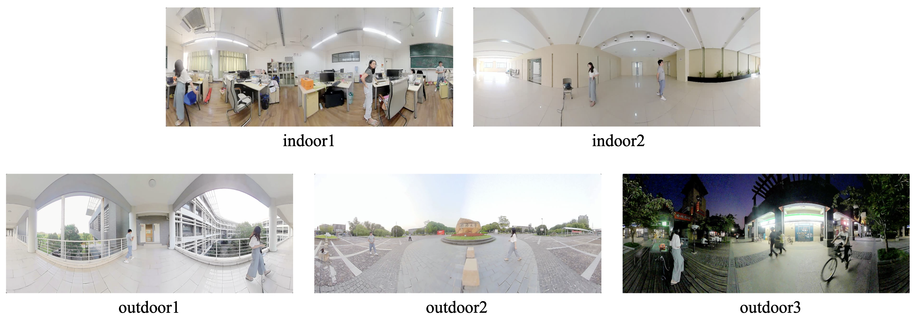

|
Pedestrian-Aware Panoramic Video Stitching Based on a Structured Camera Array Anqi Zhu1, Lin Zhang*1, Juntao Chen1, Yicong Zhou2 1 School of Software Engineering, Tongji University, Shanghai, China 2 Department of Computer and Information Science, University of Macau, China |
Introduction
This is the website for our paper "Pedestrian-Aware Panoramic Video Stitching Based on a Structured Camera Array".
Abstract
Appearance and Workflow
 Source Codes and Data
Here are some image stitching examples of Pedestrian360:
Here are video examples of Pedestrian360:
Last update: Nov. 17, 2020